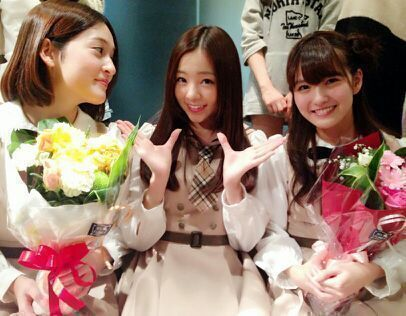

| 2013/11 17 Sun | 乃木坂☆!!イベントやってきたってばよ(*^.^*) Ro tty☆ |
やあー\(*・ω・*)/
こんにちわ . ろってぃーだお〜
今日は 『お茶会&サイン会』
のイベントがありました !
来てくださった方 皆 ありがとう!!
本当 たのちかったでちゅ\(´ε`*\)チュー
サイン会が、どーゆーものだったかと言うと
自分のサインしてほちぃと思う品を１品持ってきて
そこに ろってぃ-が目の前で
お喋りしながらサイン等を書くの (｀・ω・)
例えば、
写真やポスター、普段使っている ポーチやバッグ
ろってぃーはヘルメットにも書いたなん♪
そして お茶会とゆーのが
どんな会だったかと言いますとね、
丸いテーブルに ろってぃー対ファンの方５人で
座って、お茶を飲みながら トランプをして
わいわいするの \(・ω・)/
こんなの初めてだよ...
皆と トランプをする日が来るだなんてっ !!
めっちゃ たのちかったよ。
ちなみに Rotty夢の５人さんは
皆で コスプレをしてたよ ♪
終ってからメンバーに ろってぃーのテーブル にぎやかやなあ！！
って言われたっちゅーねん(ノ´∀｀*)
ありがとねん♪
・・・・・・・・
ぴょん.
そしてそして せっちゃん&ゆきなが
今日で 乃木坂46を卒業しました。
卒業 本当におめでとう(*^^*)


お花がとっても似合ってるよ．
二人とも 本当に 可愛い (*´ω｀*)
本当 大好きっ
卒業しても よろちくねっ( ´ ε ` )
そして 最後に まひろと かずみと ゆみの３人で
HMVの取材をうけてきました!!
取材が始まる前に カリントウを頂いたんですが
美味し過ぎて とまりませんナウでちゅ 笑
カリントウ本当 大好きなんです...。
ではではっ また 更新するねぇん
おやすみなちゃ〜い(*´ω｀*)らぶ
Rotty...
コメント(130)
2013/11/17 22:54